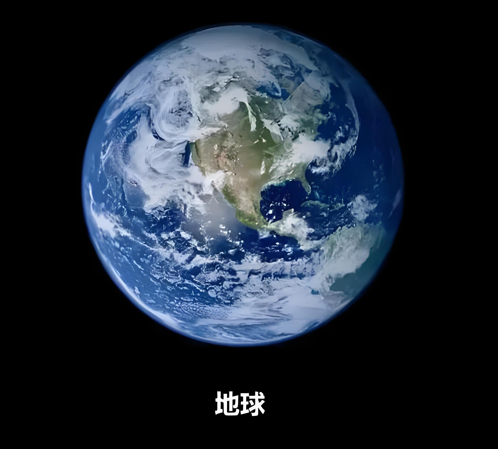

（返回上一页）
（返回上一页）地球是太阳系中的一颗行星，拥有独特的生态环境和多样的生物，是人类唯一的家园
| 阶段 | 时间 | 事件（点击某些事件可查看相应图片） |
| 太阳系形成 | 46亿年以前 | 太阳和行星从太阳星云中形成 |
| 地球形成 | 45.4亿年前 | 地球从太阳星云中聚集形成（图片同上） |
| 地球早期 | 45.4亿 - 38亿年前 | 地球经历多次巨大撞击，形成月球 |
| 原始海洋形成 | 44亿年前 | 地球表面冷却，形成原始海洋 |
| 早期生命起源 | 38亿 - 35亿年前 | 最早的生命形式出现 |
| 古元古代 | 35亿 - 25亿年前 | 单细胞生物大量繁殖，大气中氧气含量增加 |
| 太古代 | 25亿 - 5.41亿年前 | 多细胞生物出现，真核生物演化 |
| 元古代 | 5.41亿 - 2.51亿年前 | 多样化的生物群落，包括海洋无脊椎动物和早期植物 |
| 古生代 | 2.51亿 - 2.45亿年前 | 植物登陆，海洋生物多样化，包括三叶虫和古鱼类 |
| 中生代 | 2.45亿 - 6,600万年前 | 恐龙和其他爬行动物统治地球，哺乳动物出现 |
| 晚古生代 | 3.59亿 - 2.51亿年前 | 二叠纪大灭绝，约90%的物种灭绝 |
| 中生代 | 2.51亿 - 6,600万年前 | 侏罗纪和白垩纪，恐龙繁盛，鸟类出现 |
| 晚中生代 | 1.45亿 - 6,600万年前 | 白垩纪末大灭绝，恐龙灭绝，哺乳动物开始多样化 |
| 新生代 | 6,600万年前 - 现在 | 哺乳动物和鸟类多样化，人类出现 |
| 第四纪 | 260万年前 - 现在 | 冰河时期和间冰期交替，人类进化 |
（返回上一页）